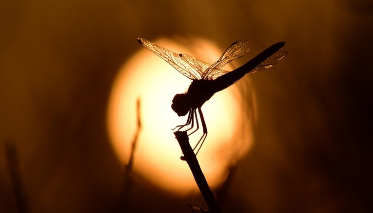
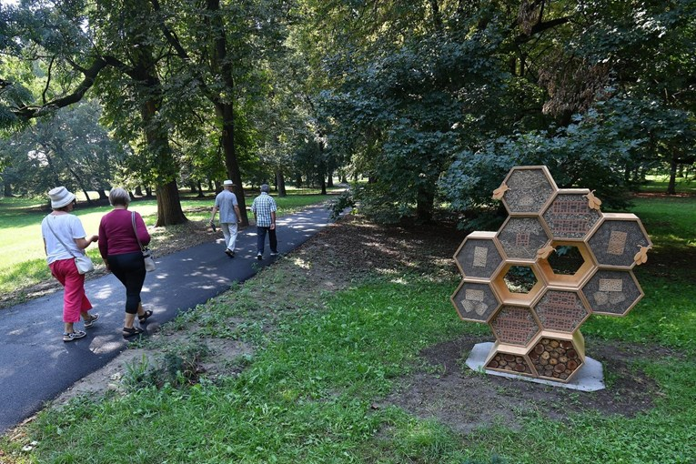
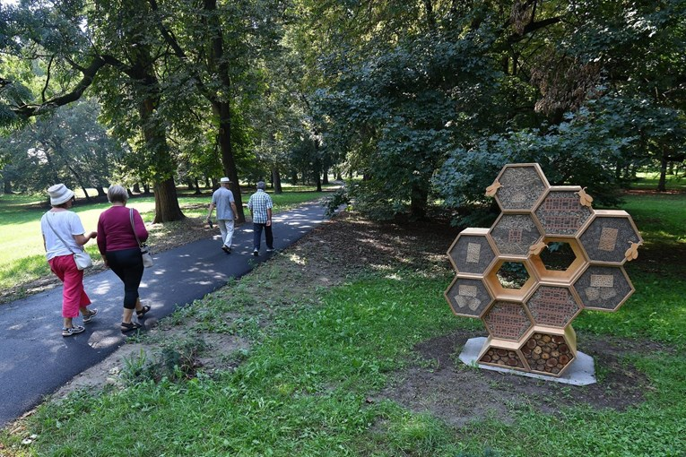

Novosti



Kukci polako izumiru
Dok razne ljudske aktivnosti ubrzano transformiraju planet, globalna populacija insekata opada stopom bez presedana do 2 posto godišnje. Više...
Sebastianu je tek 17, a otkrio je tri nove vrste kukca i upravo objavio svoj prvi znanstveni rad
Sebastian ima 17 godina, od malih nogu zanimaju ga biljke, a prošle je godine krenuo fotkati i kukce na dalmatinskom području. Naišao je tako na čak tri nove vrste, jednog zrikavca i dva skakavca. Više...

U Čakovcu postavljen hotel za kukce
U Čakovečkom perivoju javna ustanova Međimurska priroda postavila je hotel za kukce. Sve "sobe" hotela su već zauzete, a simpatična konstrukcija razveseljuje i prolaznike koje tijekom šetnje vole zaviriti tko se to sve "prijavio" u hotel.Više...